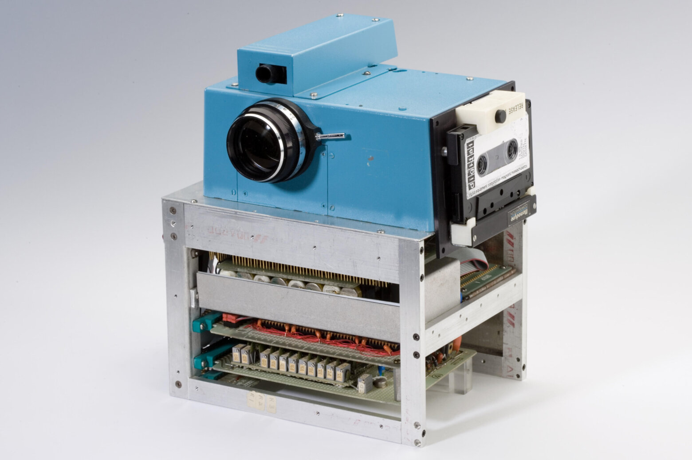
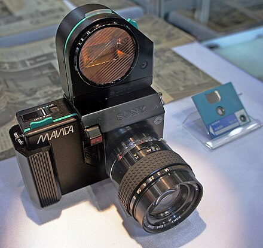
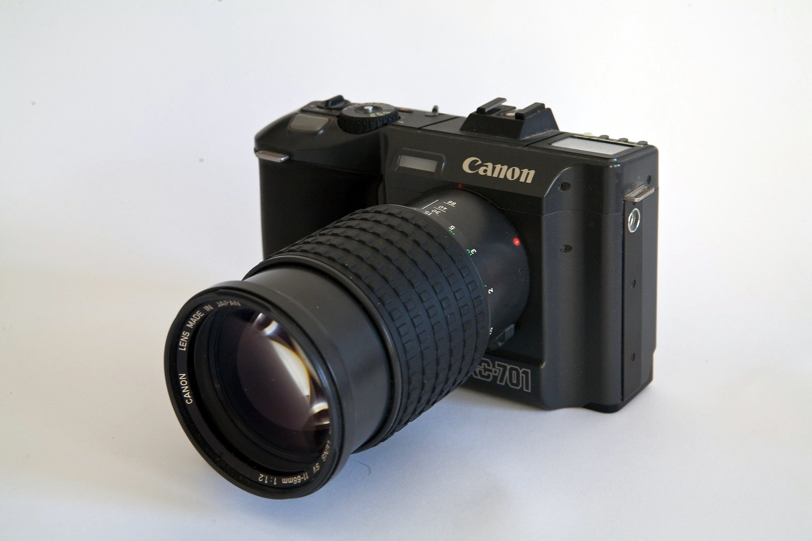
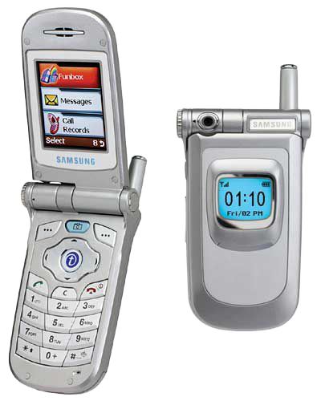

Modern Era: Late 1900s to Early 2000s
Polaroids
 Polaroid Model 95 created by Edwin Land in 1948.
Polaroid Model 95 created by Edwin Land in 1948.
Image found on Science Museum Group Collection.
An instant camera is a camera that uses self-developing film to develop the print shortly after taking a photo with the camera. The first polaroid camera was the Model 95 made by Edwin H. Land in 1948, and it's a type of instant camera. Edwin Land founded the Polaroid Corporation with George W. Wheelwright III in Cambridge, Massachusetts in 1937.
The Model 95 only produced sepia-toned images and once the film emerged from the camera, people had to wait for a minute before peeling off the negative backing of the image. While it required more precise operation when using it and the quality wasn't as a high as normal films, people loved being able to get almost instant result from the camera.
Digital Cameras
Digital cameras were different from past cameras as they didn't use film, and instead captured and saved photos on digital memory cards or internal storage. The first semiconductor image senser was the charged-coupled device (CCD), it was invented by Willard S. Boyle and George E. Smith in 1969. The CCD is a semiconductor circuit that is later used in the digital cameras.

Prototype digital camera made by Steven Sasson in 1975.
The first attempt at building a self-contained digital camera was done by Steven Sasson, an engineer at Eastman Kodak in 1975. The camera contained CCD image senser chips developed by Fairchild Semiconductor in 1973. It recorded black and white images to a compact cassette tape, had a resolution of 10,000 pixels and roughly took 23 seconds to it's first image in December 1975. The camera was just a technical exercise and was never intended for production.

The Sony Mavica, 1981.
Image by Morio
Handheld electronic cameras appeared around 1981 with a demonstration of the Sony Mavica (Magnetic Video Camera). It was an analogue camera that records pixel signals continuously without converting them into separate levels. It recorded in single frames and would store them onto a video floppy disk, it could record 50 frames per disk in field and 25 frames per disk in frame mode.

Canon RC-701. Image by D. Williams.
Analog electronic cameras didn't reach the market until the Canon RC-701 in 1986. The prototype of this camera was demonstrated at the 1984 summer Olympics by printing the images in a Japanese newspaper named the Yomiuri Shimbun. These cameras were used in the U.S for reporting World Series baseball on the USA Today, although widespread adoption was held back because they costed upwards of $20,000 and had poor image quality compared to film, and a lack of affordable printers. The first analogue electronic camera was marketed to consumers might have been the Casio VS-101 in 1987.
The first real portable digital camera that recorded images as a computerized file was the Fuji DS-1P in 1988, this recorded to a 2 MB static RAM memory card that was used a battery to keep data in memory, although it was never marketed publicly. The DS-X by Fuji was the first portable digital camera to be marketed commercially in December 1989 in Japan. The first one in the U.S was the Dycam Model 1 shipped in November 1990.
Digital SLRs
In 1986, Nikon introduced a prototype of the first SLR digital camera (Still Video Camera), made by Panasonic. The SVC was built around senser 2/3 “ CCD of 300,000 pixels. It used a video floppy disk for storage, this allowed recording 50 or 25 black and white images depending on the definition. The transition to digital formats was helped by the formation of the first MPEG and JPEG standards in 1988, allowing for image and video files to be compressed for storage.
In 1991, kodak introduced the Kodak Digital Camera system (Kodak DCS) to the market, it was the beginning of a long line of professional Kodak DCS SLR cameras that were based in part on Nikon cameras. It was the first commercially available DSLR, and it used a 1.3-megapixel sensor, a bulky external digital storage system and was priced at $13,000.
Digital camera sales continued to rise as technology advanced. The digital market segmented into different categories, Compact digital still cameras, digital SLRs, bridge Cameras and Mirrorless and compacts. Since 2003 digital cameras outsold film cameras.
Camera Phones a.k.a Smartphones
 The Kyocera Visual Phone VP-210 in made in Japan 1999.
The Kyocera Visual Phone VP-210 in made in Japan 1999.
Image found on android authority
A camera phone is just a mobile phone which is able to capture photos and record videos using a built-in digital camera. The first commercial camera phone was called the Kyocera Visual Phone VP-210, it released in Japan in May 1999. It had a 110,000-pixel front-facing camera and stored up to 20 JPEG images, which could be sent over email, or the phone could send two images per second over Japan's Personal Handy-phone System (PHS) cellular network.

The Samsung SCH-V200. Image found on Google.
The Samsung SCH-V200 released in South Korea in 2000 and was one of the first phones with built-in camera. It had a TFT liquid-crystal display and could store up to 20 photos at 350,000-pixel resolution. Although it could only use a compute connection to access photos and couldn't photos over the telephone function. One of the major technology advances was the development of CMOS sensors, this helped lower drive sensor coats low enough to enable the adoption of camera phones worldwide.
.jpg){kind=link}